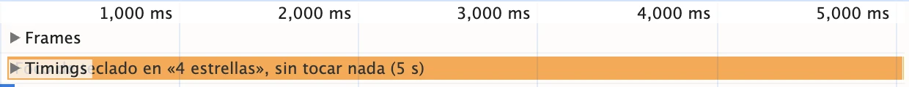

The fragile accessibility tree
Why semantic HTML is key to web performance
Joan León · A11y Conf 2026
Notes
Hello, everyone. I'm Joan León, and this talk is about a tree that almost nobody sees, but that millions of people use every day: the accessibility tree.
We'll look at why it is fragile, what breaks it, and why taking care of it makes the web both more accessible and faster.
Follow the talk on your device

- N shows or hides the notes for each slide.
- D shows all the slides on a single page.
- T switches between the light and the dark theme.
- L switches the language: español, English, català.
- ? opens help and settings, where you can turn off single-key shortcuts.
- The arrow keys, or the Previous and Next buttons, change slides.
Notes
Before we start: these slides are published at the address you see on the screen, nucliweb dot github dot io, slash, el árbol de accesibilidad frágil, which is the Spanish title of the talk, with hyphens between the words. The English version is at the same address followed by slash en. You can also scan the QR code. Every slide has notes like these, written so you can follow the talk by reading, with a screen reader, or later, when you look back at it.
Press N to see the notes, or D to read all the slides one after another as a document. T switches between the light and the dark theme, and L switches the language: the slides and the notes are also available in Spanish and Catalan. If single-key shortcuts get in the way of your screen reader, you can turn them off in help and settings, with the question mark key.
And thank you to the sign language interpreter for being with us today.
Joan León
Web Performance Artisan at PerfReviews.
Notes
I work on web performance. At PerfReviews we help companies make their websites load and respond faster. Last year I gave a lightning talk here on this topic, and I was left wanting to say much more: this is the long version, with new data.
A slow website is a less accessible website
Web performance is accessibility: it decides who can use your website and who can't.
Notes
I'll start with an idea we sometimes forget: web performance isn't only a business or SEO concern. A website that takes ten seconds to respond on a cheap phone with a bad connection isn't slow for that person: it's unusable. Optimizing performance means opening the door to people with the worst connections or low-end devices.
Who has the slowest device?
- Disabled people face more barriers to entering and staying in the job market, and so they have less access to recent technology.
- Many people who use assistive technology avoid updating: a change can break the only way they have to use their computer.
- A cheap Android phone with TalkBack is the gateway to the internet for many people.
Source: Eric Bailey, Accessible is Performant, performance.now() 2024.
Notes
And here is the connection I care about most. Who has the slowest device? As Eric Bailey explains, disabled people face more barriers to employment, and therefore to recent technology. On top of that, many people who use assistive technology don't update their operating system or their browser, out of a justified fear of breaking the one thing that works for them.
In other words: the people who depend most on the web working well are often the ones using it in the worst conditions.
This is what a website that blocks the main thread looks like

Notes
This is a recording from the Chrome Performance panel while loading the website of Renfe, the Spanish railway company. At the top is the network, with lots of requests in parallel. Below it, the browser's main thread: for more than six seconds it is busy almost without a break, with yellow blocks of JavaScript and purple blocks of styles and layout.
While the main thread is busy, the browser can't respond to anyone: not to someone clicking, not to someone pressing a key, and not to the assistive technology asking it what's on the screen. The largest element on the page doesn't appear until almost six seconds in.
You can hear milliseconds too
Time from a key press until the screen reader starts speaking, on a slow machine:
230–250 ms → 190–200 ms
Marco Zehe, accessibility tree optimization in Firefox 67 (2019), cited by Eric Bailey.
Notes
If you use a screen reader, you can hear performance. In 2019, Marco Zehe, who worked on Firefox accessibility, managed to cut the time from a key press until the screen reader starts speaking: on a slow machine, from about 240 milliseconds to about 195.
How did he do it? By creating fewer accessible objects for the divs that add nothing. Fewer nodes, less work, less waiting. Keep this idea in mind, because it's the thesis of this talk.
How a browser paints
- HTML → DOM
- CSS → CSSOM
- Style calculation
- Accessibility tree
- Layout
- Paint
- Composite
The accessibility tree is built from the DOM after styles are calculated: display: none or a pseudo-element's content changes it.
Notes
Let's go very quickly through what the browser does. It downloads the HTML and builds the DOM. It downloads the CSS and builds the CSSOM. It calculates which styles apply to each element, works out where everything goes, which is the layout, and then paints and composites the final image.
And in parallel, when there's an assistive technology listening, it builds the accessibility tree. Notice the order: it's built after styles are calculated, because CSS changes it too. An element with display none disappears from the tree, and the text of a before or after pseudo-element shows up in it. So no, CSS is not just presentation.
DOM + ARIA → accessibility tree
HTML
<fieldset>
<legend>Ringtone</legend>
<input type="radio" id="calisto"
name="ringtone" checked>
<label for="calisto">Calisto</label>
</fieldset>Accessibility tree
group "Ringtone"
radio "Calisto" checked: trueEach node has a name, a role, a state and, when needed, a description. With semantic HTML, the browser fills them in for you.
Notes
On the left, a group of radio buttons in HTML: a fieldset with its legend, an input of type radio and its label. On the right, what the browser hands to assistive technology: a group called “Ringtone” and, inside it, a radio called “Calisto” that is checked.
Every object in the tree has a name, a role, a state and, optionally, a description. With semantic HTML you get all of that for free, without writing a single line of ARIA or JavaScript.
It's not a tree: it's a forest
- Each operating system has its own API: NSAccessibility on macOS, UI Automation and IAccessible2 on Windows, AT-SPI on Linux.
- The tree lives outside the page: the browser sends it to another process, and assistive technology queries it through the system.
- If the page changes faster than the tree is updated, what the person hears no longer matches what's on the screen.
Notes
We talk about the accessibility tree as if there were only one, but it's really a forest. Each operating system has its own accessibility API, and the browser translates the page into each of them.
On top of that, the tree lives outside the page: it has to be sent to another process. The bigger and more changeable the DOM, the more data travels and the longer it takes to update. And if the page changes faster than the tree is synchronized, a person who can't see the screen may activate a control that is no longer there, or that is in a different state. That's why we say it's fragile.
The day VoiceOver stopped talking
An audit of a medical training app built with Material Design. VoiceOver always hung on the same screen: a huge list of radio buttons.
Prioritizing developer ergonomics without considering the generated HTML it produces can lead to bad things happening.
Eric Bailey, Accessible is Performant, performance.now() 2024.
Notes
This talk was born from a story Eric Bailey told in 2024. He was auditing a medical training app built with Material Design and, on one screen, VoiceOver stopped talking. He restarted Safari, cleared the cache, restarted the computer: always the same. The culprit was a pile of Material radio buttons injected into the page. When they replaced them with native radios, VoiceOver stopped hanging.
In his words: prioritizing developer ergonomics without considering the generated HTML it produces can lead to bad things happening
. I wanted to know whether that still happens today, in 2026, with the components we use now.
A native radio button
<div class="radio">
<input type="radio" name="ringtone" id="moon-0" value="moon-0" checked>
<label for="moon-0">Calisto</label>
</div>131 characters. 0 bytes of JavaScript.
Notes
I built a test bench with six implementations of the same group of radio buttons: a heading, “Ajustes” (Settings), a group, “Tono de llamada” (Ringtone), and N options. All the code is in the talk's repository. Each implementation was built following its official documentation.
This is the baseline: the native radio. A div, an input and a label. One hundred and thirty-one characters and not a single byte of JavaScript.
shadcn/ui with Radix
<div role="group" data-slot="field" data-orientation="horizontal" class="…">
<button type="button" role="radio" aria-checked="true"
data-state="checked" value="moon-0" data-slot="radio-group-item"
id="moon-0" tabindex="-1" data-radix-collection-item class="…">
<span data-state="checked" data-slot="radio-group-indicator" class="…">
<span class="…"></span>
</span>
</button>
<label data-slot="field-label" for="moon-0" class="…">Calisto</label>
</div>2,475 characters (the classes are trimmed with “…”). 275 KB of JavaScript.
Notes
Now shadcn/ui with Radix, probably the most widely used option in React projects today. There's no input here: there's a button that gets the radio role through ARIA, an aria-checked state kept in sync by JavaScript, and two spans to draw the circle. I've trimmed the Tailwind classes with ellipses; untrimmed, a single option takes up almost two thousand five hundred characters.
A curious detail: the current version of shadcn no longer uses Radix by default, but Base UI, which instead of a button generates a span with the radio role and a hidden input. It's in the test bench too.
MUI
<label class="MuiFormControlLabel-root …">
<span class="MuiButtonBase-root MuiRadio-root … Mui-checked …">
<input class="PrivateSwitchBase-input …" type="radio"
value="moon-0" checked name="ringtone">
<span class="…">
<svg … aria-hidden="true" viewBox="0 0 24 24"><path d="…"></path></svg>
<svg … aria-hidden="true" viewBox="0 0 24 24"><path d="…"></path></svg>
</span>
</span>
<span class="MuiTypography-root … MuiFormControlLabel-label …">Calisto</span>
</label>1,119 characters. 329 KB of JavaScript.
Notes
MUI does use a native input, and that's good for accessibility. But it wraps it in spans, hides it visually and draws the circle with two SVGs. And every time you click, it adds elements for the ripple effect. That's 329 kilobytes of JavaScript for the sample page.
Material Web
<md-radio id="moon-0" name="ringtone" value="moon-0" checked tabindex="0">
#shadow-root
<div aria-hidden="true" class="container checked">
<md-ripple aria-hidden="true">#shadow-root <div class="surface"></div></md-ripple>
<md-focus-ring aria-hidden="true"></md-focus-ring>
<svg class="icon" viewBox="0 0 20 20">… a mask and three circles …</svg>
<div class="touch-target"></div>
</div>
</md-radio>
<label for="moon-0">Calisto</label>821 characters, including its shadow DOM. 41 KB of JavaScript.
Notes
And Material Web, Google's web components, the successors of the library Eric audited. An md-radio element with its own shadow DOM, which contains two other web components with their own shadow DOM, an SVG and several divs. It sets the radio role with JavaScript, through ElementInternals. It's the lightest in JavaScript, 41 kilobytes, but you'll see that weight isn't everything.
What one option costs
| Implementation | Elements | Attributes | Depth | CSS selectors | JavaScript |
|---|---|---|---|---|---|
| Native | 5 | 7 | 3 | 5 | 0 KB |
| shadcn (Base UI) | 9 | 36 | 6 | 304 | 275 KB |
| shadcn (Radix) | 8 | 33 | 6 | 304 | 275 KB |
| MUI | 12 | 25 | 7 | 35 | 329 KB |
| Material Web | 16 | 36 | 7 | 45 | 41 KB |
Elements, attributes and depth of the measured block, including the shadow DOM. Uncompressed JavaScript for the whole page.
Notes
With a single option, the differences look small: the native one uses five elements and seven attributes; the rest, between eight and sixteen elements and between twenty-five and thirty-six attributes. The big difference is in the JavaScript: zero versus between 41 and 329 kilobytes.
But nobody builds a form with one option. Let's see what happens when there are many.
With 100 options
| Implementation | Elements | Blocking time (TBT) | Click response |
|---|---|---|---|
| Native | 302 | 0 ms | < 16 ms |
| shadcn (Base UI) | 405 | 160 ms | 120 ms |
| shadcn (Radix) | 305 | 150 ms | 112 ms |
| MUI | 903 | 139 ms | 208 ms |
| Material Web | 1,402 | 283 ms | 104 ms |
Click response is measured with Event Timing, which doesn't record events shorter than 16 ms. Above 200 ms, INP is no longer considered good.
Notes
With a hundred options, and the CPU slowed down four times to simulate an ordinary phone, the native radio doesn't block the main thread for a single millisecond, and the click responds in under sixteen milliseconds, which is the smallest amount that can be measured.
The framework components block for between 139 and 283 milliseconds while loading. And the MUI click takes 208 milliseconds: that's already over the 200 threshold Google considers good for INP, just because of the radio buttons on the page.
One click, with a screen reader listening
| Implementation | Milliseconds | Proportional bar |
|---|---|---|
| Native | 2.6 | |
| Styled native | 3.2 | |
| shadcn (Base UI) | 185 | |
| shadcn (Radix) | 446 | |
| Material Web | 453 | |
| MUI | 1,189 |
Chrome with --force-renderer-accessibility, which is what happens when a screen reader is running. With 100 options: 1 ms for native versus 36 ms for MUI.
Notes
For me, this is the most important figure in the talk. Chrome only builds the accessibility tree when it detects an assistive technology. You can force it with a startup flag, and then the performance traces show the accessibility work under its own name.
We measured a single click on a page with a thousand radio buttons. With the native radio, the browser spends 2.6 milliseconds updating the accessibility tree. With shadcn, between 185 and 446. With Material Web, 453. And with MUI, almost 1.2 seconds. More than a second of accessibility work for pressing a radio button, on top of everything else. With a hundred options the difference is one millisecond versus thirty-six.
Why? With a native radio, a click changes the state of two inputs. With a React component, the click re-renders the group, attributes change on many elements, and every change in the DOM is a change the accessibility tree has to process.
Material Web with 1,000 options: 108 seconds
// @material/web 2.5.0 · radio/internal/single-selection-controller.js
updateTabIndices() {
const siblings = this.controls; // querySelectorAll of every radio in the group
…
for (const sibling of siblings) {
if (sibling !== focusable) sibling.tabIndex = -1;
}
}| Options | 100 | 300 | 1,000 |
|---|---|---|---|
| Time | 0.1 s | 0.8 s | 24 s |
Notes
Material Web has an extra problem. Each radio, when it connects to the page, looks up every radio in its group and rewrites their tabindex. With N radios, that's N squared writes to the DOM. With a hundred options you barely notice; with three hundred it takes almost a second; with a thousand, twenty-four seconds on my laptop, and a hundred and eight seconds with the CPU of an ordinary phone.
And all of that to reimplement in JavaScript something the browser already does on its own with a group of native radios: a single tab stop and arrow key navigation.
What the browser gives you for free
- A single tab stop per group and navigation with the arrow keys.
- The right name, role and state in the accessibility tree.
- Form submission, validation with
required, and autofill. - The system's high contrast mode (
forced-colors). - It works before the JavaScript loads, and if it never loads.
And with accent-color or appearance: none, your brand's styling.
Notes
All of this comes built into an input of type radio: focus, arrow keys, the name and state in the accessibility tree, form submission, validation, Windows high contrast mode, and the fact that it works even if the JavaScript fails.
And the design? With the accent-color property you apply the brand color in one line. And if you need a completely custom design, appearance none lets you draw it with CSS without losing any of the above. In the test bench, the native radio with custom styles costs practically the same as the untouched native one.
An honest caveat: DOM size matters too
| Accessibility | Blocking time on load |
|---|---|
| Off | 16 ms |
| On | 479 ms |
Semantic HTML reduces the cost, but doesn't remove it: less DOM means less work for the accessibility tree.
Notes
I want to be honest with the data. With a thousand options, even the native radio pays: without accessibility, loading blocks for 16 milliseconds; with a screen reader listening, 479. Building the accessibility tree for a large page is expensive, however you build the page.
The conclusion isn't “native is free”, but that every DOM node has an extra cost for people who use assistive technology. Less DOM, and simpler DOM, means less work, and that's where semantic HTML wins by a long way.
The switch you don't see
| Mode | What Chrome adds |
|---|---|
| Native accessibility API support | Responds to the operating system's accessibility APIs |
| Web accessibility | The page's tree: the role, name, value, state and position of every node |
| Text metrics | Line breaks and word boundaries in the text |
| Extended properties | Text styles, table cells, live regions, ranges and relations |
| Screen reader | What only a detected screen reader needs |
| HTML | Every HTML attribute of every node |
They turn on on demand: a screen reader asks for the full tree; dictation, the basic one; a password manager, the forms.
Notes
If you type chrome://accessibility in the address bar, Chrome shows you something you normally don't see: which parts of the accessibility tree it is building and why. By default everything is off. Chrome turns it on on demand, when an application on the system asks it about the page.
And it isn't all or nothing. There are modes. One connects Chrome to the system's accessibility APIs. Another builds the page's tree, with the role, name, value, state and position of every node. Others add the line breaks in the text, extended properties such as live regions or table cells, what only a screen reader needs, or every HTML attribute.
According to the Chromium source code, a screen reader turns on the full mode; a dictation tool, the basic one; and a password manager, a mode that only builds the forms. In other words, the cost of the accessibility tree isn't paid only by people who use a screen reader.
I found this out by accident while preparing this talk. After the VoiceOver tests, macOS kept flagging VoiceOver as active even though it was off. This page listed VoiceOver as an active assistive technology, and Chrome was building the full tree on every page I opened. I noticed because the test bench, with accessibility turned off, started measuring accessibility work: between 30 and 50 extra milliseconds on every load of the travel website, with the CPU slowed down like a modest phone's. That's the tax that people who use assistive technology pay on every page. The lighter the page, the smaller the tax.
The mode descriptions come from the Chromium source code, from the file ui/accessibility/ax_mode.h, and from the page itself in Chrome 158.
For the measurements, Chrome has two startup flags: force-renderer-accessibility, which turns on the tree the way a screen reader would, and disable-platform-accessibility-integration, which ignores whatever the operating system says.
Ten years asking the same question
- 2016: Marcy Sutton:
you can't optimize what you can't measure
. She proposes an “Accessibility Tree Ready” metric. - 2020: Scott Jehl asks Lighthouse for metrics that include assistive technology (issue #11049). It's still open.
- 2024: Eric Bailey asks for it again at performance.now().
- 2026: here we are.
Notes
This isn't a new idea, and I think it's important to say so. In 2016, Marcy Sutton was already giving talks about accessibility and performance. She said you can't optimize what you can't measure, and that there was no way to measure the accessibility tree. She proposed a metric, an “Accessibility Tree Ready”.
In 2020, Scott Jehl opened an issue in Lighthouse asking for metrics that take assistive technology into account. It's still open. In 2024, Eric Bailey asked for it again. Ten years of the same question. And all of this before AI, back when we still did our own thinking.
The hypothesis
Optimizing content for performance also makes screen readers faster.
How I put it to the test
- In the browser: Chrome traces with accessibility turned on (
--force-renderer-accessibility). - In the screen reader: automated VoiceOver, measuring how long it takes to announce each option.
Notes
So in 2026 the question can be answered, at least in part. My hypothesis is that optimizing content for performance also makes screen readers faster.
I put it to the test at two levels. In the browser, with Chrome traces with accessibility turned on, which you've already seen. And in the screen reader itself, by automating VoiceOver to measure how long it takes to announce each option.
In the browser: confirmed
- Accessibility work grows with the amount and complexity of the DOM.
- After a click, with 1,000 options: 2.6 ms with the native radio versus 185–1,189 ms with framework components.
- That work happens on the main thread: it competes with the response to the interaction.
Notes
On the browser side, the hypothesis is confirmed: accessibility work grows with the size and complexity of the DOM, and with framework components it's between seventy and four hundred and fifty times higher after the same click. And it happens on the main thread, the same one that has to respond to the person.
In VoiceOver: you can hear it too
| Implementation | 10 options | 100 options | 1,000 options |
|---|---|---|---|
| Native | 33 | 64 | 436 |
| Styled native | 32 | 67 | 437 |
| shadcn (Base UI) | 47 | 106 | 1,063 |
| shadcn (Radix) | 47 | 99 | 859 |
| MUI | 57 | 171 | 1,973 |
| Material Web | 45 | 79 | 1,068 |
With 1,000 options, MUI takes almost 2 s per option: 4.5 times as long as native.
Notes
And now, what a person actually hears. I automated VoiceOver on macOS: I open each page, put the focus on the first radio, press the down arrow twenty times and measure how long VoiceOver takes to say the next option. Three repetitions of each combination.
With ten options, everything is between 32 and 57 milliseconds. With a hundred, native stays at about 65 milliseconds, shadcn at about 100 and MUI at 171. With a thousand options, native takes 436 milliseconds, which is already a lot, and the framework components between 860 milliseconds and almost two seconds per option. Imagine going through a list of countries like that: two seconds of silence for every key press.
So the hypothesis is also confirmed where it matters: in what the person hears. And so is the caveat: DOM size penalizes everyone, but it penalizes components that rebuild the control much more.
A real website: A11yConf Travel
| Version | Built with | JavaScript | Elements | CSS selectors |
|---|---|---|---|---|
| Native | HTML: select, dates, range, checkbox, radio, dialog | 10.6 KB | 758 | 68 |
| Legacy | React, MUI, react-select, react-datepicker, react-modal | 785 KB | 2,041 | 626 |
The task: 14 keyboard steps. Filter by stars, price and meal plan, open a hotel, go through its rooms and close it.
Notes
A thousand radio buttons prove the mechanism, but they aren't the web we use every day. So I built a fictional travel website, A11yConf Travel, with a hotel search: a search form, filters for stars, price, meal plan and amenities, a list of thirty hotels, a sort selector and a modal with the details of each hotel.
I built it twice, with exactly the same content and the same accessible names. Once with native HTML and about 10 kilobytes of JavaScript for filtering. And once the way many websites with years behind them are built: React, Material UI with its icons, react-select for the destination, react-datepicker for the dates and react-modal for the details. The legacy version loads 785 kilobytes of JavaScript, almost three times as many elements and nine times as many CSS selectors.
And in both versions I measured the same keyboard task, fourteen steps: moving through the star filters, checking four stars, lowering the price, changing the meal plan, opening the first hotel, going through its rooms and closing it with Escape.
In the browser: the tree costs the same; what surrounds it doesn't
| Measure | Native | Legacy |
|---|---|---|
| Main thread | 255 ms | 991 ms |
| JavaScript | 79 ms | 464 ms |
| Accessibility work | 56 ms | 57 ms |
| Slowest interaction | 24 ms | 72 ms |
| LCP on load | 176 ms | 484 ms |
The traces, ready to open in DevTools, are in the repository: bench/traces/travel/.
Notes
Here comes an important caveat. With a realistic page, the accessibility tree work is practically the same in both versions: 56 milliseconds versus 57 across the whole task. The nodes that reach the screen reader are almost the same, about 1,480 in each version; the legacy version's more than 500 extra nodes are ignored nodes, which never reach the screen reader.
What changes is everything that happens around each key press. The legacy version keeps the main thread busy almost four times as long, runs almost six times as much JavaScript, and its slowest interaction takes 72 milliseconds versus 24. And the page takes almost three times as long to paint the main content.
The traces for each version are published in the repository. Each step of the task appears by name in the Timings track of the Performance panel, and the text summary in the repository has the same figures, step by step.
In VoiceOver: slower in all 14 steps
| Step | Native | Legacy |
|---|---|---|
| Tab between the star filters | 18–21 ms | 36–40 ms |
| Check 4 stars until you hear “6 hoteles encontrados” (6 hotels found) | 162 ms | 200 ms |
| Change the meal plan with the arrow keys | 50–52 ms | 81–92 ms |
| Open the hotel details | 70 ms | 93 ms |
| Close with Escape and return to the button | 59 ms | 88 ms |
| The whole task | 648 ms | 959 ms |
It isn't the 2 seconds of the 1,000 radios: it's tens of milliseconds on every key press.
Notes
And what the person hears. With automated VoiceOver, the legacy version is slower in all fourteen steps of the task, without exception. Moving with Tab between the filters takes twice as long: about 20 milliseconds versus about 40. Changing the meal plan with the arrow keys, between 50 and 92. Opening the hotel details, 70 versus 93. Closing the modal and returning to the button, 59 versus 88.
Checking a filter is the closest step, 162 versus 200, because most of that time is VoiceOver's own wait before it reads the region that announces the results.
In total, the task adds up to 648 milliseconds of waiting in the native version and 959 in the legacy one: one and a half times as much. It isn't the two-second silence of the thousand radios. It's tens of milliseconds on every key press, adding up over a task, a page and a whole day of browsing with a screen reader.
What only shows up in the trace
With keyboard focus on a control, MUI animates a “ripple” in an infinite loop, even with prefers-reduced-motion: reduce.
| Measure | Native | Legacy |
|---|---|---|
| Frames generated | 30 | 299 |
| GPU work | 10 ms | 74 ms |
| Compositor tasks | 2 | 1,719 |
Trace for DevTools: bench/traces/focus-idle/. In the legacy version, the Frames track is one continuous band.
Notes
When I opened the legacy version's trace in DevTools, something showed up that I didn't expect: frames and animations between one key press and the next, while the person isn't doing anything.
It's Material UI's focus effect. When a button, a checkbox or a radio receives keyboard focus, MUI draws a circle that pulses in an infinite loop, in two-and-a-half-second cycles, for as long as the focus stays there. And it keeps pulsing even when the operating system asks for reduced motion.
To see it in isolation, I recorded both versions with keyboard focus on the four-star checkbox, five seconds without touching anything, with accessibility turned on and the reduced motion preference set. The native version generates 30 frames in those five seconds. The legacy one, 299: about sixty per second, nonstop. The GPU works for 74 milliseconds versus 10, and the compositor runs more than 1,700 tasks versus 2. The main thread barely notices, because the animation runs on the compositor, but the device never gets a rest.
In other words, precisely the people who navigate with the keyboard or a screen reader, and who have also asked for less motion, are the ones who pay for that continuous work. It can be turned off in the MUI configuration, but it's on by default.
The same trace, in DevTools
Legacy

Native

bench/traces/focus-idle/.Notes
The two captures from the DevTools Performance panel show the difference. At the top, the legacy version: from about 1.6 seconds on, the Frames track fills up with frames, one after another, until the end. At the bottom, the native version: the Frames track stays empty for the whole five seconds.
Both traces are in the repository, in the bench/traces/focus-idle folder, and you can open them by dragging them into the Performance panel in Chrome DevTools.
An iPhone 16 Pro and 1,000 radio buttons
| Implementation | Click, without VoiceOver | Click, with VoiceOver | Load, without VoiceOver | Load, with VoiceOver |
|---|---|---|---|---|
| Native HTML | 0 ms | 0 ms | 43 ms | 83 ms |
| shadcn/ui (Radix) | 68–74 ms | 63–68 ms | 214 ms | 228 ms |
| MUI | 4.8–5.0 s | 5.1 s | 556 ms | 552 ms |
With MUI, every click freezes Safari for 5 seconds, with or without VoiceOver. With native HTML, 0.
Notes
This is the first result from a real device, submitted with the in-browser version of the benchmark: an iPhone 16 Pro, with Safari, once with VoiceOver on and once with VoiceOver off. The numbers are the time Safari stays blocked after each action, the median of three repetitions.
With native HTML, choosing one of a thousand radio buttons doesn't block Safari at all: zero milliseconds, with and without VoiceOver. With shadcn, about seventy milliseconds. And with MUI, between four point eight and five point one seconds. Five seconds of frozen phone for every click, on a high-end iPhone. On my laptop, with Chrome, that same click took less than two hundred milliseconds.
My first hypothesis was that those five seconds would be the accessibility tree, and I was wrong: without VoiceOver it takes almost the same time. It's an MUI performance problem in Safari on iPhone that everyone pays for, whether or not they use a screen reader. What VoiceOver does add shows up in the load: with native HTML, the page takes 83 milliseconds instead of 43.
That's why measuring on real devices matters. Neither my laptop nor iPhone emulation on the laptop showed anything like this.
What this data doesn't tell us
- Only Chrome and only VoiceOver on macOS: no NVDA, no JAWS, no TalkBack, no braille displays.
- A fast laptop with a slowed-down CPU isn't a low-end phone.
- Local server, with no network throttling.
- 1,000 options is an extreme case; 100 is already realistic in long forms.
- A11yConf Travel is a mock-up: no real network, no ads and no third-party scripts.
- In some tests with the native radio, the first key press didn't move the selection and VoiceOver ended up one option behind; those steps are excluded.
All the code and data are in the repository for anyone who wants to repeat the tests.
Notes
And what this data doesn't tell us. I've only tested Chrome and VoiceOver. A laptop with a slowed-down CPU is an approximation, not a real phone. And a thousand options is an extreme case, although a hundred already shows up in real forms, such as a country picker. The travel website is closer to reality, but it's still a mock-up: it has no real network, no ads and no third-party scripts, which on a real website usually weigh even more. All the code is published so anyone can repeat the tests with other browsers and screen readers, and I'd love for you to do it.
The same pattern, decade after decade
- 2016, Angular Material:
<md-checkbox role="checkbox" tabindex="0"> - 2024, Material Components Web: the radio that hung VoiceOver.
- 2026, shadcn/ui:
<button role="radio">
And now an AI writes it.
Notes
Look at the pattern. In 2016, Marcy Sutton's example was an Angular Material checkbox, a custom element with its role and tabindex set by hand. In 2024, the Material radio that hung VoiceOver. In 2026, the shadcn radio: a button with the radio role.
The frameworks change, but the pattern stays the same: rebuilding with divs, ARIA and JavaScript what the browser already provides. And today, more and more, we don't write that code ourselves: an AI agent writes it. So I wanted to check what it chooses.
The experiment
Create a settings page with a ringtone picker. The options are: Callisto, Ganymede, Luna and Europa.
- Claude Code (Claude Opus 5.5) and Antigravity (default model).
- Clean profiles: no skills, memory or personal configuration.
- Two scenarios: an empty folder and an existing React project with shadcn/ui.
- 3 runs per combination.
Notes
The experiment is simple. This is the prompt: create a settings page with a ringtone picker, with these four options. It doesn't mention any technology. I gave it to the agents in Spanish, word for word: Crea una página de ajustes con un selector de tono de llamada. Las opciones son: Calisto, Ganímedes, Luna y Europa.
The slide shows it translated into English.
I ran it with Claude Code and with Google's Antigravity, with clean profiles, without my skills or my configuration, to see what anyone would get. In two scenarios: an empty folder, and an existing React project that uses shadcn, which is how we almost always work. Three runs of each, because agents aren't deterministic.
In an empty folder: semantic HTML
| Agent | What it generated | Native radio |
|---|---|---|
| Claude Code | A single index.html | 3 of 3 |
| Antigravity | HTML, CSS and JavaScript without a framework | 3 of 3 |
With <fieldset>, <legend>, <label>, a skip link and an aria-live region.
Notes
And here I got my first surprise. I expected the AI to generate React and shadcn by default. It didn't: in an empty folder, both agents, all six times, generated semantic HTML. Native radios, fieldset and legend, labels, a skip link and even an aria-live region to announce that the settings were saved. No framework.
When nothing steers them, the agents choose the platform.
In a React project with shadcn: the project's pattern
| Agent | Radix RadioGroup | Native radio |
|---|---|---|
| Claude Code | 3 of 3 | 0 of 3 |
| Antigravity | 3 of 3 | 0 of 3 |
The component wasn't installed: the agents wrote it by hand, imitating the shadcn one.
Notes
Second scenario: the same prompt, but inside a React project with shadcn that already has buttons, cards and text fields, but doesn't have the radio component. All six times, both agents hand-wrote a Radix RadioGroup, imitating the shadcn one: buttons with the radio role, and JavaScript. Not once did they use the native radio they had chosen in the empty folder.
AI amplifies what you already have
The same agent, with the same prompt, writes semantic HTML in an empty folder and reproduces your project's pattern when there is one.
Notes
This is the conclusion of the experiment. AI doesn't make bad choices on its own: it amplifies what you already have. If your project is full of components that rebuild native controls, the agent will follow that path, even though it knows how to do better. And since we almost never start from an empty folder, that's the real-world case.
Modern Web Guidance
- Skills and a CLI that give agents up-to-date knowledge of the web platform.
- Published by Google Chrome, with Microsoft Edge, Mozilla Firefox and MDN. Apache 2.0 license.
- By default, it only recommends what is Baseline Widely available.
Adapt checkboxes, radio buttons, sliders and progress bars to your palette without replacing them with custom components.
brand-consistent-forms guide (my own summary). github.com/GoogleChrome/modern-web-guidance
Notes
How do we change that? This is where Modern Web Guidance comes in. It's a set of skills and a command line tool that gives agents up-to-date knowledge of the web platform. It's published by the Chrome team, together with Edge, Firefox and MDN, and by default it only recommends features that already work in every browser.
And it has a guide that seems written for this talk: adapting form controls to your brand without replacing them with custom components.
Installing it isn't always enough: the agent has to consult it
| Condition | Claude Code | Antigravity |
|---|---|---|
| Without Modern Web Guidance | 0 of 3 | 0 of 3 |
| Installed | 1 of 3 (1) | 3 of 3 (3) |
Installed + AGENTS.md | 3 of 3 (3) | 3 of 3 (3) |
Notes
I installed it and repeated the experiment in the React project. Antigravity always consulted it, and all three times it used the native radio. Claude only consulted it one time out of three. And look: that time, and only that time, it used the native radio. The other two times it didn't even look at it, and it wrote the Radix component again.
So installing it isn't always enough: it depends on the agent deciding to consult it. I added a two-line AGENTS.md file to the project, the one the documentation itself recommends, and the result was three out of three for both agents: they always consulted it and always used the native radio, inside the same React project.
A note on method: for Claude, I checked whether it consulted the guide in the tool log; for Antigravity, I relied on what the agent itself says in its reply.
Two lines that change the result
# AGENTS.md
## Web development
- Before implementing or changing any interface, consult
Modern Web Guidance (skill `modern-web-guidance`) and follow its
recommendations.
- This project's Baseline target is Baseline Widely available.What Claude generated, inside the React project with Tailwind:
<fieldset>
<legend>Tono de llamada</legend>
<input type="radio" className="size-4 accent-primary …" />Notes
This is the whole file. The AGENTS.md in the experiment was written in Spanish; the slide shows it translated into English. It doesn't say “use native radios”: that would be giving it the answer. It only says to consult Modern Web Guidance before touching the interface, and what the compatibility target is.
And this is the result: a fieldset, a legend and an input of type radio with accent-color and the primary color of the shadcn theme. The legend reads “Tono de llamada”, Ringtone, because the prompt was in Spanish. Inside the same React project, and with Tailwind. It's exactly the native variant from my test bench.
And how much does it cost?
| Condition | Cost |
|---|---|
| Without Modern Web Guidance | $0.32–0.37 |
| With Modern Web Guidance | $0.46–0.71 |
A few cents more, once, versus hundreds of milliseconds on every click of every visit.
Notes
Consulting the guide has a cost: each generation goes from about 35 cents to between 46 and 71. We pay it once, when we write the code. The heavy component is paid for by everyone who uses the website, on every visit and every click. And the people who pay the most are those using a screen reader on a modest device.
Developer experience has a cost
When we put the developer experience ahead of the user experience, someone pays the difference. And it can be measured.
Notes
I'll close with the idea from last year's lightning talk, now with data. We choose components because they're comfortable for developers. That comfort has a cost, and we're not the ones who pay it: users pay it, especially those who use assistive technology. Today we've seen that this cost can be measured.
What you can do tomorrow
- Use semantic HTML first: it's your first accessibility and performance optimization.
- Test with a screen reader: Cmd + F5 turns on VoiceOver on macOS.
- Measure with accessibility turned on:
--force-renderer-accessibility. - Tell your agent to consult Modern Web Guidance from
AGENTS.md. - Support Lighthouse issue #11049.
Notes
Five things you can do tomorrow. One: semantic HTML first. Two: test with a screen reader; on a Mac, Command plus F5 turns on VoiceOver, and it's enough to check that it doesn't hang. Three: when you measure performance, also measure with accessibility turned on. Four: if you work with agents, tell them in AGENTS.md to consult Modern Web Guidance. And five: drop by the Lighthouse issue that Scott Jehl opened in 2020; a bit of attention may help us finally get a metric.
Try it on your phone

Measure how much the accessibility tree costs your device.
- About 2 minutes, nothing to install.
- If you use a screen reader, run it twice: with it off and with it on.
- Nothing is sent unless you decide to send it.
Notes
Everything I've shown you comes from a single laptop. And I'd like it to come from your devices. If you open the address on the screen, or scan the QR code, you'll reach a version of the benchmark that runs in the browser, on your phone too, without installing anything. The address is the same as the slides, ending in slash benchmark: nucliweb dot github dot io, slash, el árbol de accesibilidad frágil with hyphens between the words, slash, benchmark.
The test loads the same pages you've seen, the group of a thousand radio buttons and the travel website, clicks on them and measures how long your browser stays blocked after each action. It takes about two minutes.
If you use a screen reader, I'd ask you for something more: run it twice, once with the screen reader off and once with it on. The page compares the two, and the difference is what the accessibility tree costs your device. At the end you'll see your results in a table, and you decide whether to share them in the repository. With VoiceOver on my laptop, a click on a thousand radio buttons blocks the browser for 0 milliseconds with native HTML, 86 with shadcn and 98 with MUI. I'm really curious to find out how much it is on your phones.
Thank you
Code, data and references: github.com/nucliweb/el-arbol-de-accesibilidad-fragil · joanleon.dev
Credits
- Eric Bailey, Accessible is Performant (2024).
- Marcy Sutton, Accessibility and Performance (2016).
- Scott Jehl, Lighthouse #11049 (2020).
- Marco Zehe, performance work on the Firefox accessibility tree.
- Scott O'Hara, a11y_styled_form_controls.
Notes
Thank you very much. All the test bench code, the agent experiment, the data and the references are in the repository. Special thanks to Eric Bailey, Marcy Sutton, Scott Jehl, Marco Zehe and Scott O'Hara, whose work this talk is built on. Questions?